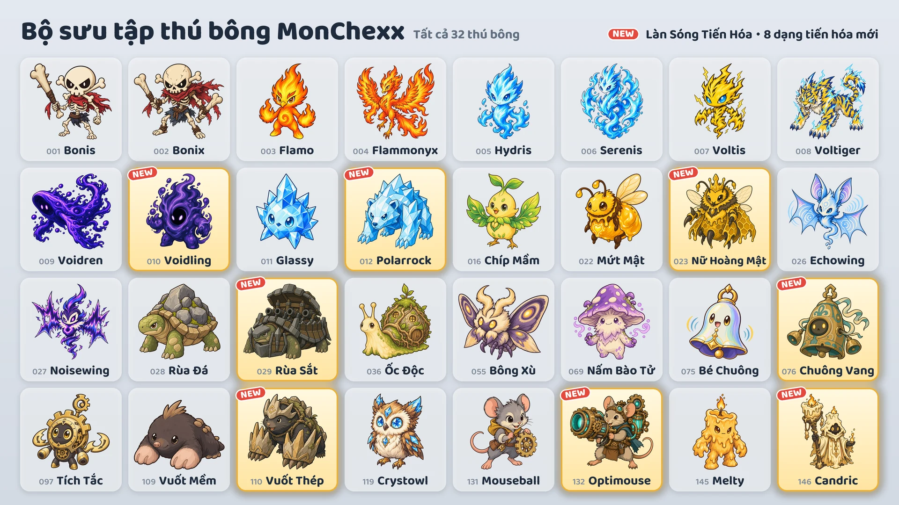

Ngày 16 tháng 10, tám dạng tiến hóa mới sẽ được thêm vào.

Tám dạng tiến hóa mới
- Voidling: tiến hóa từ Voidren · Đỡ đòn
- Polarrock: tiến hóa từ Glassy · Đỡ đòn / Đấu sĩ
- Nữ Hoàng Mật: tiến hóa từ Mứt Mật · Hỗ trợ / Đánh xa
- Rùa Sắt: tiến hóa từ Rùa Đá · Đỡ đòn
- Chuông Vang: tiến hóa từ Bé Chuông · Đỡ đòn / Hỗ trợ
- Vuốt Thép: tiến hóa từ Vuốt Mềm · Đỡ đòn / Sát thủ
- Optimouse: tiến hóa từ Mouseball · Đánh xa
- Candric: tiến hóa từ Melty · Hỗ trợ / Đánh xa
Cách nhận
- Máy gắp thú (sự kiện): Trong thời gian sự kiện (16–24 tháng 10), mọi máy gắp thú, trừ hai máy ở hai đầu dãy, đều có một dạng tiến hóa mới cùng hai thú bông khác. Sau sự kiện, các dạng tiến hóa mới cũng được bỏ vào máy với tỉ lệ như mọi thú bông khác.
- Quầy đổi thú bông: Đổi 10 bản trùng lấy thú bông bạn chọn (Đổi tự chọn), hoặc 3 bản trùng lấy một thú bông ngẫu nhiên (Đổi ngẫu nhiên).
- Gói thú bông: Các dạng tiến hóa mới cũng có thể ra từ gói thú bông.
Dùng thú bông tiến hóa
- Thú bông tiến hóa được sưu tầm riêng và có thể cho vào đội ngay khi sở hữu.
- Trong “Lập đội thi đấu”, chọn một thú bông rồi bấm Dạng gốc hoặc Tiến hóa để đổi dạng.
- Mỗi đội chỉ được có một thú bông thuộc mỗi dòng tiến hóa.
- Thú bông tiến hóa lên cấp riêng, tách biệt với thú bông dạng gốc.
Thú bông mới
Các chỉ số tính theo Sức tấn công, Sức mạnh phép hoặc Máu tối đa sẽ tăng theo khi thú bông lên cấp.
 Voidling · Đỡ đòn · Tầm đánh 1 ô
Voidling · Đỡ đòn · Tầm đánh 1 ô
- Hấp Thụ Hư Không: Máu tối đa của bản thân tăng thêm một lượng bằng 200% Sức mạnh phép cộng với 3% Máu tối đa lúc đầu trận, đồng thời hồi máu đúng bằng lượng vừa tăng. Sau đó gây sát thương phép bằng 20% Máu hiện tại của bản thân lên mọi kẻ địch trong phạm vi 1 ô quanh bản thân. Lượng Máu tối đa tăng thêm được giữ đến khi trận đấu kết thúc.
- Bữa Tiệc Hư Không: Nhận 10 Năng lượng mỗi khi một kẻ địch trong phạm vi 4 ô dùng kỹ năng chủ động.
 Polarrock · Đỡ đòn/Đấu sĩ · Tầm đánh 1 ô
Polarrock · Đỡ đòn/Đấu sĩ · Tầm đánh 1 ô
- Cú Đập Sương Giá: Gây sát thương vật lý bằng 240% Sức tấn công lên mục tiêu hiện tại và khiến nó bị Đóng băng trong 1,2 giây. Kẻ địch bị Đóng băng ngừng hành động và ngừng nhận Năng lượng. Các kẻ địch khác trong phạm vi 1 ô quanh mục tiêu chịu sát thương vật lý bằng 120% Sức tấn công và bị gắn Sương giá, giảm 15% Tốc độ đánh trong 8 giây.
- Da Pha Lê: Giảm 20% sát thương phép phải nhận, áp dụng cả cho sát thương phép theo thời gian. Mức giảm này được tính sau khi áp dụng Kháng phép.
 Nữ Hoàng Mật · Hỗ trợ/Đánh xa · Tầm đánh 3 ô
Nữ Hoàng Mật · Hỗ trợ/Đánh xa · Tầm đánh 3 ô
- Sữa Ong Chúa: Hồi máu cho tất cả ong thợ của bản thân bằng 10% Máu tối đa của chúng và tăng 200% Tốc độ đánh của chúng trong 3 giây. Sau đó, nếu số ong thợ ít hơn số tối đa, triệu hồi 1 con ong thợ vào ô trống xung quanh.
- Binh Đoàn Ong Thợ: Chỉ huy tối đa 3 con ong thợ. Chỉ số của ong thợ tăng theo cấp của Nữ Hoàng Mật, và các hiệu ứng lên đồng minh có giới hạn số mục tiêu sẽ không chọn ong thợ. Mỗi giây, ong thợ nhận sát thương phép bằng 4% Máu tối đa của chính nó. Khi Nữ Hoàng Mật bị hạ gục, ong thợ trở nên cuồng nộ: sát thương gây ra và sát thương phải nhận đều tăng lên gấp 2 lần.
 Rùa Sắt · Đỡ đòn · Tầm đánh 1 ô
Rùa Sắt · Đỡ đòn · Tầm đánh 1 ô
- Pháo Kích Xoay Vòng: Bắt đầu từ hướng đang nhìn, xoay ngược chiều kim đồng hồ từng hướng một và bắn 6 phát pháo. Mỗi phát pháo gây sát thương vật lý bằng 500% Sức tấn công lên kẻ địch đầu tiên trong phạm vi 2 ô theo hướng đó. Các phát pháo cách nhau 0,5 giây, và khoảng thời gian này thay đổi theo Tốc độ đánh. Không di chuyển trong khi bắn; nếu bị Choáng hoặc Đóng băng, các phát pháo còn lại sẽ không được bắn. Không nhận Năng lượng cho đến khi đợt pháo kích kết thúc.
- Mai Pháo Đài: Với mỗi kẻ địch trong phạm vi 1 ô quanh bản thân, Giáp và Kháng phép của bản thân đều tăng thêm 35.
 Chuông Vang · Đỡ đòn/Hỗ trợ · Tầm đánh 1 ô
Chuông Vang · Đỡ đòn/Hỗ trợ · Tầm đánh 1 ô
- Gióng Chuông: Gây sát thương phép bằng 90% Sức mạnh phép lên mọi kẻ địch trong phạm vi 2 ô quanh bản thân và khiêu khích chúng trong 2 giây. Trong thời gian đó, kẻ địch bị khiêu khích chỉ tấn công Chuông Vang và không thể bắt đầu dùng kỹ năng mới. Cũng trong thời gian này, mỗi khi trúng đòn đánh thường của kẻ địch, gây sát thương phép lên mọi kẻ địch trong phạm vi 2 ô quanh bản thân, bằng 25% sát thương của đòn đó tính trước khi bị Giáp và khiên làm giảm. Không nhận Năng lượng cho đến khi hiệu ứng khiêu khích kết thúc.
- Cộng Hưởng: Mỗi khi một đồng minh khác trong phạm vi 2 ô quanh bản thân dùng kỹ năng chủ động, hồi máu cho bản thân bằng 50% Sức mạnh phép.
 Vuốt Thép · Đỡ đòn/Sát thủ · Tầm đánh 1 ô
Vuốt Thép · Đỡ đòn/Sát thủ · Tầm đánh 1 ô
- Đào Hang Xung Kích: Đào xuống đất và xóa mọi hiệu ứng suy yếu khỏi bản thân, di chuyển với tốc độ gấp 3 lần Tốc độ di chuyển tới ô trống có nhiều kẻ địch nhất trong phạm vi 1 ô quanh ô đó, rồi gây sát thương vật lý bằng 500% Sức tấn công lên mọi kẻ địch trong phạm vi 1 ô quanh bản thân. Không thể bị tấn công khi đang ở dưới đất.
- Móng Vuốt Đá: Giáp tăng thêm một lượng bằng 20% Sức tấn công.
- Bắt đầu trận với 0 Năng lượng.
 Optimouse · Đánh xa · Tầm đánh 4 ô
Optimouse · Đánh xa · Tầm đánh 4 ô
- Pháo Laser: Sạc pháo laser trong 1,5 giây, nhắm về hướng mục tiêu hiện tại trong phạm vi 4 ô, rồi bắn một tia laser rộng 1 ô tới tận mép sân đấu, gây sát thương phép bằng 1000% Sức tấn công lên mọi kẻ địch trong vùng bắn. Hướng bắn được chọn khi bắt đầu sạc; nếu bị Choáng hoặc Đóng băng trong lúc sạc, phát bắn bị hủy.
- Mạch Làm Nóng: Mỗi lần đánh thường, Tốc độ đánh tăng thêm 15%. Hiệu ứng này tăng Tốc độ đánh tối đa 100% và bị đặt lại khi dùng kỹ năng chủ động.
 Candric · Hỗ trợ/Đánh xa · Tầm đánh 3 ô
Candric · Hỗ trợ/Đánh xa · Tầm đánh 3 ô
- Ngọn Lửa Bất Diệt: Để lại dấu ấn lên một đồng minh có Máu hiện tại thấp nhất, không tính bản thân, trong 5 giây. Đồng thời tạo cho đồng minh mang dấu ấn một lớp khiên bằng 200% Sức mạnh phép của bản thân trong cùng khoảng thời gian. Khi đồng minh mang dấu ấn sắp bị hạ gục bởi sát thương trực tiếp, bản thân chịu thay 200% sát thương đó, và đồng minh không phải nhận sát thương đó. Mỗi lúc chỉ duy trì một dấu ấn, và dấu ấn không ngăn được việc bị hạ gục bởi sát thương theo thời gian.
- Sáp Tan Chảy: Sát thương trực tiếp bản thân phải nhận, phần còn lại sau khi khiên chặn, được chia nhỏ và trừ dần vào Máu trong 4 giây. Sát thương theo thời gian vẫn trừ vào Máu ngay.
Trận xếp hạng và huy hiệu
- Đối thủ trong trận xếp hạng cũng dùng các dạng tiến hóa mới.
- Tám dạng tiến hóa mới không được tính vào huy hiệu “Bộ sưu tập Mùa 1”.
- Huy hiệu “Chuyên gia tiến hóa” nhận được khi sở hữu 5 thú bông tiến hóa khác nhau. Hiện có 13 thú bông tiến hóa.
Xem thay đổi cân bằng của mọi thú bông trong ghi chú cập nhật “Cân bằng & Hệ thống chiến đấu”.